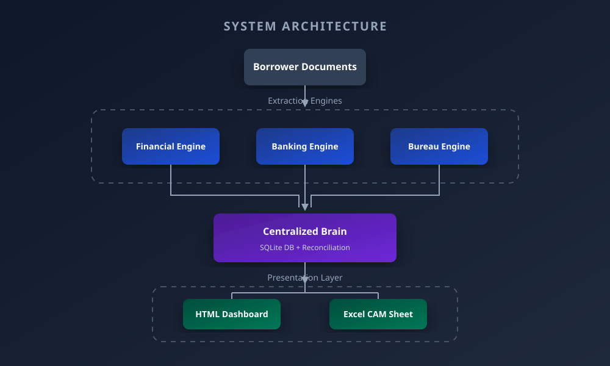
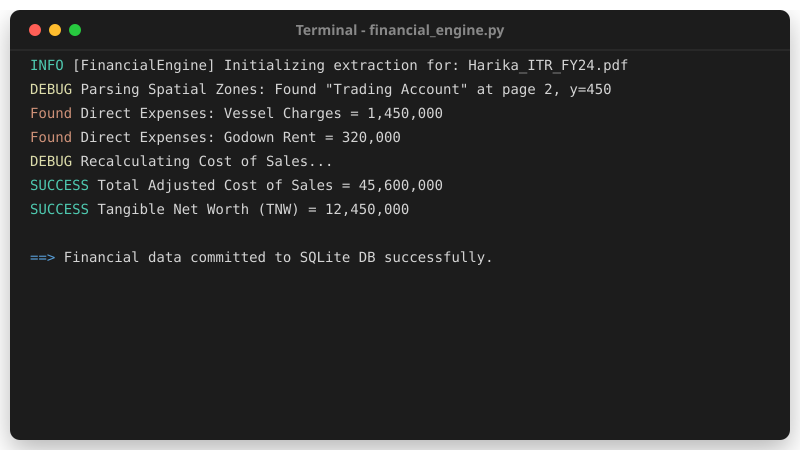
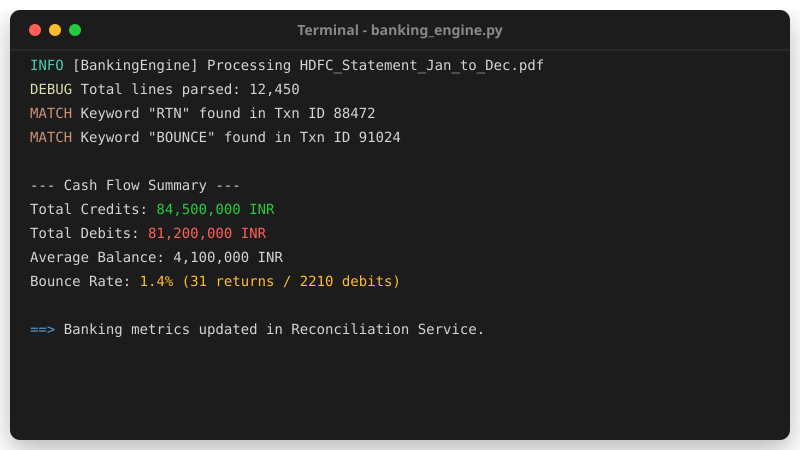
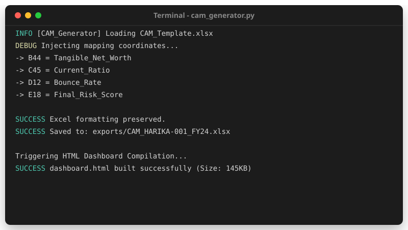
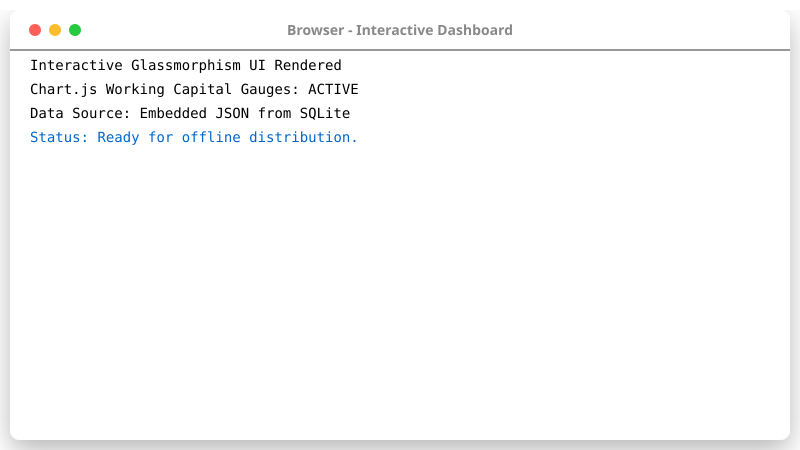

Home
📊 Repository Metrics
| Category | Metric | Details |
|---|---|---|
| Modules | 8 Independent Services |
Financial, Banking, GST, Bureau, Reconciliation, Risk, CAM, Dashboard |
| Python Files | 40+ Scripts |
Clean Architecture decoupled logic |
| Architecture | Clean / Microservice |
Strict separation of Concerns |
| Tests | 15+ Pytest Suites |
E2E, Unit, and Policy Engine Mocking |
| Documentation | 10 Chapters |
Complete Engineering Handbook in docs/ |
| Decisions | 4 ADRs |
Formal Architecture Decision Records |
1. The Business Case
Commercial lenders spend days manually preparing Credit Assessment Memorandums (CAMs). They transcribe 50-page audited financial PDFs, extract working capital ratios into fragmented spreadsheets, and sample thousands of bank transactions looking for diversion risks.
CUIS was designed to transform this fragmented workflow into a modular decision-support platform. It integrates financial intelligence, banking analytics, configurable credit policies, explainable risk scoring, and automated CAM generation into a single deterministic pipeline.
Workflow Evolution Timeline
[Manual Era] Data Entry ──> Spreadsheets ──> Human Math ──> Inconsistent Risk Assessment (2-3 Days)
↓
[The CUIS Era] PDF Ingest ──> Regex Parsers ──> Policy Engine ──> Standardized CAM (Under 2 Minutes)
2. System Architecture
CUIS implements Clean Architecture to guarantee that dirty extraction code never touches the pristine business rules.

3. Engine Modules
The platform is strictly decoupled into independent engines. Each engine is responsible for a single domain of intelligence.
🏛️ The Financial Intelligence Engine
Extracts layout-aware tabular data from Audited Income Tax Returns, instantly calculating Tangible Net Worth and Cost of Sales by hunting for specific Direct Expenses.

🏦 The Banking Analytics Engine
Processes thousands of lines of multi-bank statement data to calculate cash flows, flag diversion risks, and compute the critical "Bounce Rate".

⚖️ The Risk Policy Engine
The Brain of CUIS. Evaluates reconciled facts against configurable banking mandates (e.g., Current Ratio > 1.33) to provide 100% explainable credit decisions.

📊 The CAM Generator & Dashboard
Injects parsed data into bank-ready Excel templates using OpenPyXL and compiles a zero-dependency HTML interactive dashboard.


4. Engineering Handbook
This repository is more than code; it is a fully documented product.
📚 The CUIS Knowledge Base
- 01. Executive Summary
- 02. The Business Problem
- 03. System Architecture
- 04. Module Design (Engines)
- 05. Database Schema & Design
- 06. Risk Policy Engine
- 07. Excel CAM & Dashboard Generation
- 08. API & Services Design
- 09. Testing Strategy
- 10. Future Product Roadmap
🧠 Architecture Decision Records (ADRs)
We document our major engineering decisions explicitly to demonstrate maturity: * ADR-001: Why we use SQLite for v1.0 * ADR-002: Configurable Rule Engine vs ML * ADR-003: Excel Injection for CAM Generation * ADR-004: Spatial-Aware Regex over Standard OCR
📄 Formal Case Study
Read the complete breakdown of the business problem, the engineering challenges overcome, and the ultimate ROI of the platform: 👉 Download / Print the CUIS Case Study
5. Live Demo
Watch the entire E2E pipeline execute in real-time. The system ingests raw financial PDFs, executes the risk policy, and instantly generates the interactive dashboard:

Finance • Credit Analytics • Data Science